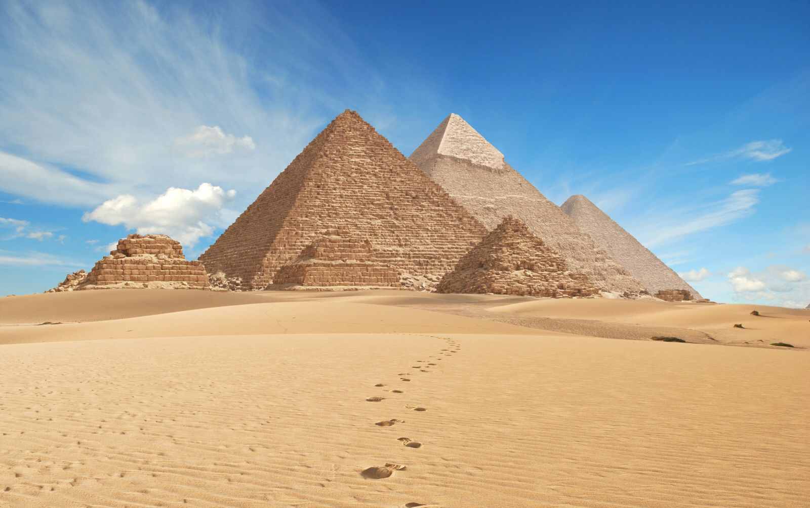
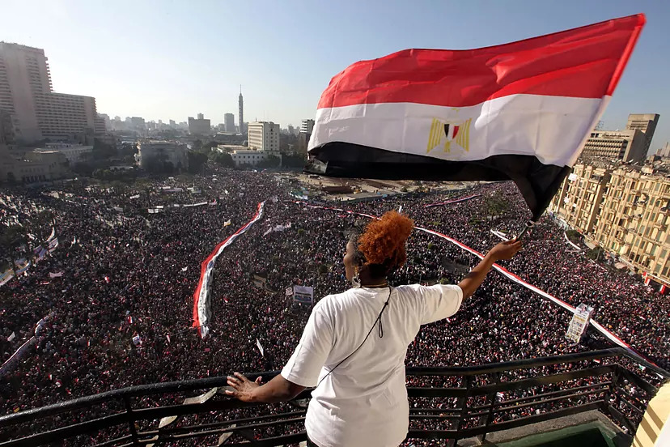

Eventos Históricos de Egipto
-
Construcción de las Pirámides
 -
Descubrimiento de la Tumba de Tutankamón

-
Revolución Egipcia de 2011


Sitios de Visita Obligada en Egipto
-
Pirámides de Giza
Una de las siete maravillas del mundo antiguo, las pirámides son un símbolo de la antigua civilización egipcia.
-
Templo de Karnak
El complejo de templos más grande de Egipto, dedicado al dios Amón.
-
Valle de los Reyes
La necrópolis donde se encuentran las tumbas de muchos faraones, incluido Tutankamón.
Experiencias Culturales en Egipto
-
Festival de la Luz de Luxor
Una celebración anual que ilumina la ciudad con espectáculos de luces y fuegos artificiales.
-
Mercados de Khan el-Khalili
Un mercado vibrante donde se pueden encontrar artesanías locales y probar la comida egipcia.
-
Baile del Vientre
Una experiencia cultural única que se puede disfrutar en varios restaurantes y festivales.